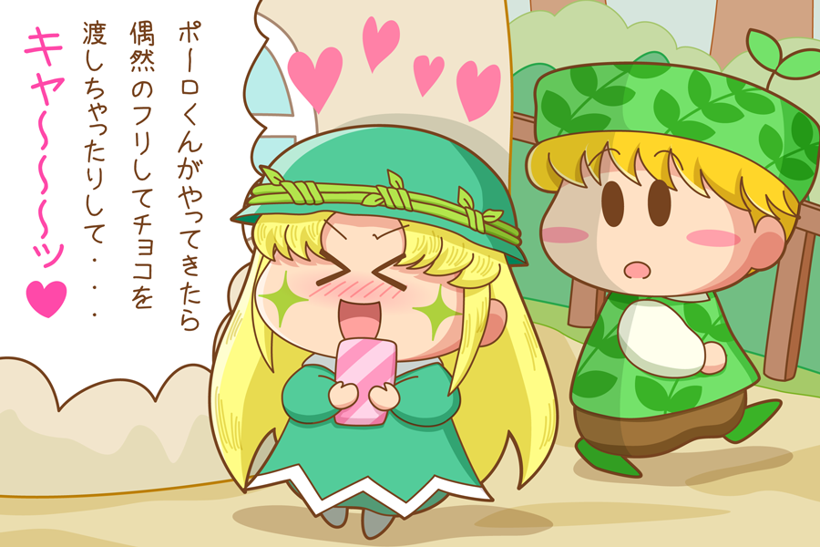

アロマ「ポーロくんがやってきたら偶然のフリしてチョコを渡しちゃったりして・・・キャ～～～ッ♡」
ポーロ「アロマちゃん？」
アロマ「ポーロくん！？ い、いつからそこにいたの？」
ポーロ「たった今だよ。通りかかったらアロマちゃんがこそこそしているからどうしたのかなと思って・・・。アロマちゃん手に何持っているの？」
アロマ「こ、これ？ え、えーっと、つまらないものですがよろしければ・・はいっ」
ポーロ「え？ボクにいいの？ ありがとうアロマちゃん。中には何が入っているのかな？」
いくらなんでもポーロくん鈍すぎですね(^◇^;)。アロマはポーロが通るのをずっと待ち伏せしていたけれど、ポーロにはアロマとの出会いは偶然に映っていそうです。この分だと、後で中身がチョコだとわかっても、「クッキー焼いてみたのでよかったらどうぞ」的なアロマの親切心しか感じなさそうな気もします。まぁアロマはちゃんとチョコを渡せたので結果オーライですね。
あ、念のための補足ですが、このアロマとポーロの組み合わせはムルモ屋本舗オリジナルCPなのです。９５話「大物妖精M､電撃婚約！？」の終盤で、アロマが言っていた「本当はね、幼馴染で気になる彼がいるんだ♡」をヒントに、同じ植物系妖精をということでその彼にポーロが選ばれました。ポーロはアニメの登場回数はわずか１回のみ（それもモブキャラとして）なので、性格などの設定は全然わからないのですが。。
他のCPのバレンタインも気になりますね。たくさんの女の子が幸せをゲットできていることを願います(^^)。ハッピー・バレンタイン！
(2015/2/15)